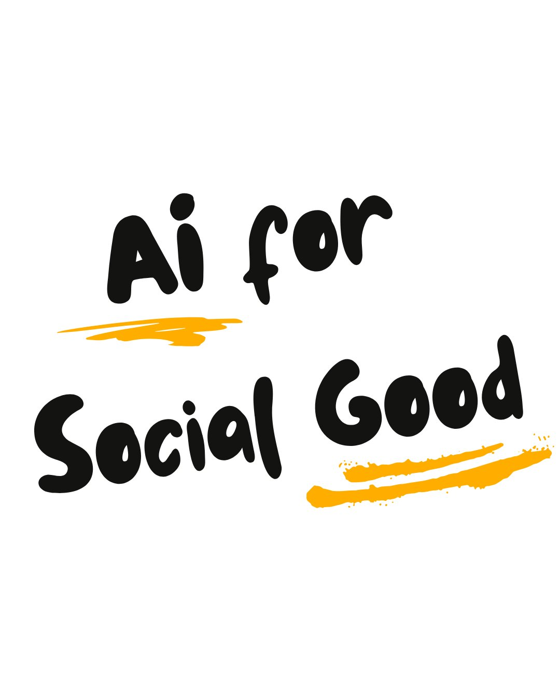

The tools exist. The data exists. What's missing is the bridge between the people building AI and the communities who need it most. We exist to close that gap by making sure the right people are in the room, asking the right questions, and directing resources toward the problems that actually matter.
Angela leads sustainability, AI, and innovation programs at Carnegie Mellon University. With a decade of international development experience spanning water and sanitation, maternal health, and disaster resilience across South Asia, Africa, and the Middle East, she brings a field-tested lens to emerging technology. She is focused on responsible AI adoption and how it can drive climate action, ocean conservation, and equitable access at scale.
Paulina is the author of Do Good Capital, a newsletter at the intersection of technology, investing, and social impact. Her career spans international policy, investment banking at HSBC, and venture capital at Equal Opportunity Ventures, where she backed companies serving low-income and historically marginalized communities. This cross-sector path gives her a unique view of how capital can be redirected toward the communities that need it most.

Practitioners, funders, and researchers who believe AI's most important work is still ahead of us.